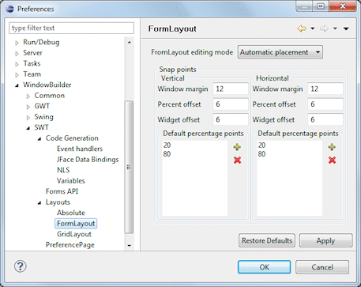
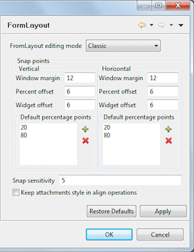

|

 This page is used to control various SWT > Layouts > FormLayout options. FormLayout editing modeThis preference controls whether FormLayout editing is in Automatic Placement mode or Classic mode. In Automatic Mode, attachments are determined automatically based on the position of the widgets themselves. In Classic mode, full control over the attachments on each widget side is available. Window marginThis preference determines how far away from the window edge the margin snap point appears. Percent offsetThis preference determines how far away from the percentage lines the offset snap points should appears. Widget offsetThis preference determines how far away from the widget edges the offset snap points should appears. Default percentage pointsThis preference determines where percentage snap points will appear. The values can be integers from 1 to 99 inclusive (50 would be the center of the container). Snap sensitivity (Classic mode only)This preference determines the maximum number of pixels that the control can be away from the snap point for the control to be “grabbed” by the snap point. Keep attachments style in align operations (Classic mode only)This preference controls whether the attachment styles for a control changes when the alignment buttons are used. If it is unchecked, the attachment styles of the sides of the controls you are aligning will be changed to the alignment styles of the control you are aligning to. |